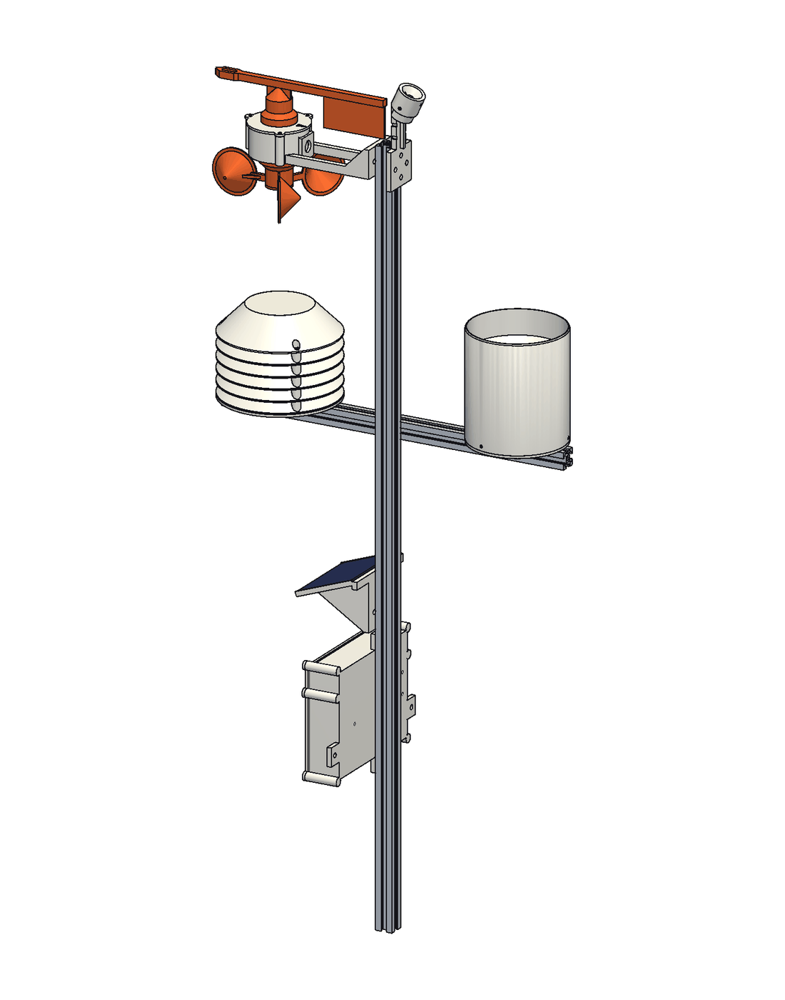

Forsyth weather station
The printed kit for a Forsyth station: wind vane and cups, rain gauge, Stevenson screen, core box, solar bracket and sky pod, on a 2020 mast. The guide walks through every step with pictures drawn from the model. The tracker keeps your progress, step by step, and shares a build with your team.
Open the build trackerThe tracker asks you to sign in with your email, so your builds stay yours. The guide and PDFs need no account.

37 steps in 10 sections38 printed partsUpdated 2026-11-19